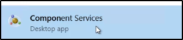
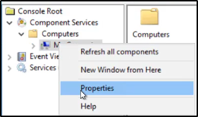
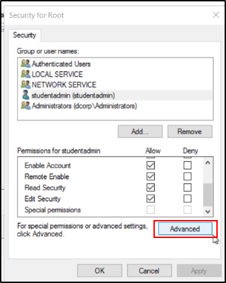
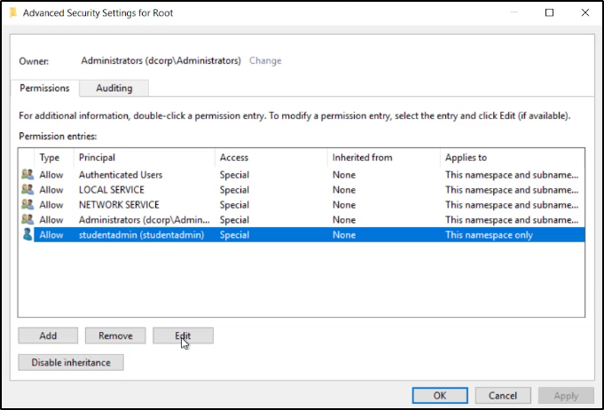
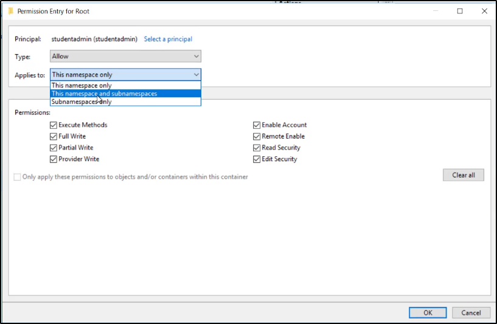

Security Descriptors
E' possibile modificare i Security Descriptors
(informazioni di sicurezza come Owner, Primary Group, DACL e SACL)
di metodi ad accesso multiplo remoto (securable objects)
per permettere l'accesso ad utenti non-admin.
Sono necessari privilegi da Administrator per fare ciò.
Questo permette di creare una backdoor molto utile sul sistema.
Security Descriptor Definition Language
Il Security Descriptor Definition Language (SDDL)
permette di descrivere il formato dove
viene scritto un Security Descriptor.
SDDL utilizza stringhe ACE per DACL e SACL:
ace_type; ace_flags; rights; object_guid; inherit_object_guid; account_sid
https://docs.microsoft.com/it-it/windows/win32/secauthz/ace-strings?redirectedfrom=MSDN
Ecco l'ACE per gli Amministratori built-in per i WMI Spaces:
A;CI;CCDCLCSWRPWPRCWD;;;SID
(Per ottenere i pieni permessi su un utente,
basta sostituire in SID il SID dell'utente che vogliamo!)



Aggiungi l'utente:




Ora, per trovare il namespace del WMI:


Infine, possiamo verificare col comando:

E' possibile effettuare delle azioni utili, anche da linea di comando.
Questo permette ad utenti non-admin di accedere ad oggetti sicuri:


Possiamo fare lo stesso di Set-RemoteWMI
con lo script Set-RemotePSRemoting:


Possiamo effettuare le stesse operazioni ma modificando il registro di Windows:
https://github.com/HarmJ0y/DAMP